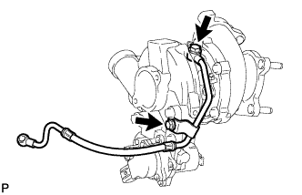
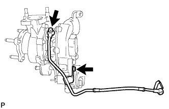
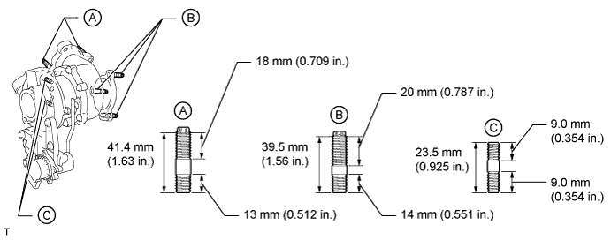
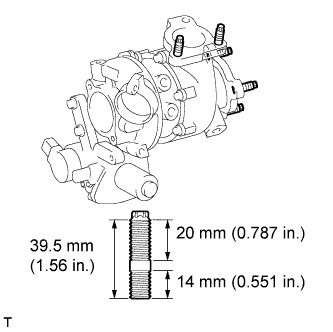
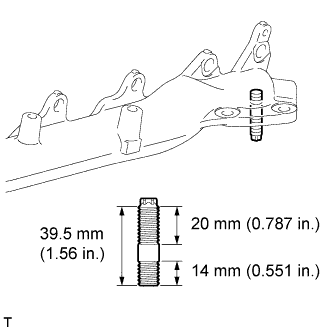

EXHAUST MANIFOLD W/ TURBOCHARGER > REMOVAL |
| 1. DISCONNECT CABLE FROM NEGATIVE BATTERY TERMINAL |
Disconnect the cables from the negative (-) main battery and sub-battery terminals.
| 2. REMOVE ENGINE ASSEMBLY |
Remove the engine assembly from the vehicle (Click here).
| 3. REMOVE NO. 1 ENGINE OIL LEVEL DIPSTICK GUIDE (for Bank 1) |
 |
Remove the 2 bolts and No. 1 engine oil level dipstick guide.
Remove the O-ring from the No. 1 engine oil level dipstick.
| 4. REMOVE NO. 1 INTAKE AIR CONNECTOR PIPE (for Bank 1) |
 |
Disconnect the 4 connectors.
Using a clip remover, detach the 5 wire harness clamps.
 |
Loosen the hose clamp, and remove the bolt and No. 1 intake air connector pipe.
| 5. DISCONNECT NO. 2 VENTILATION HOSE (for Bank 1) |
 |
| 6. DISCONNECT NO. 2 TURBO WATER HOSE (for Bank 1) |
 |
| 7. DISCONNECT BREATHER PLUG RH (for Bank 1) |
 |
| 8. REMOVE NO. 1 EXHAUST MANIFOLD HEAT INSULATOR (for Bank 1) |
 |
Remove the 3 bolts and No. 1 exhaust manifold heat insulator.
| 9. DISCONNECT NO. 1 OUTLET TURBO OIL HOSE (for Bank 1) |
 |
| 10. REMOVE NO. 1 TURBO WATER PIPE SUB-ASSEMBLY (for Bank 1) |
 |
Disconnect the water hose.
Remove the 3 bolts, 2 nuts, No. 1 turbo water pipe and gasket.
| 11. REMOVE NO. 1 TURBOCHARGER STAY (for Bank 1) |
 |
Remove the 2 bolts and No. 1 turbocharger stay.
| 12. REMOVE NO. 1 VENTILATION TUBE SUB-ASSEMBLY (for Bank 1) |
 |
Disconnect the vacuum hose.
Remove the union bolt, bolt, No. 1 ventilation tube and gasket.
| 13. REMOVE NO. 1 TURBOCHARGER SUB-ASSEMBLY WITH EXHAUST MANIFOLD RH (for Bank 1) |
 |
Remove the union bolt and gasket, and disconnect the No. 1 inlet turbo oil pipe from the cylinder block.
 |
Remove the 10 nuts, 10 collars and No. 1 turbocharger with exhaust manifold RH.
 |
Remove the gasket.
 |
Remove the 2 nuts and bolt, and separate the No. 1 turbocharger and exhaust manifold RH.
Remove the gasket from the No. 1 turbocharger.
| 14. REMOVE NO. 1 INLET COMPRESSOR ELBOW (for Bank 1) |
 |
Remove the 2 bolts, No. 1 inlet compressor elbow and gasket.
| 15. REMOVE NO. 1 TURBO OIL PIPE (for Bank 1) |
 |
Remove the 2 bolts, No. 1 turbo oil pipe and gasket.
| 16. REMOVE NO. 1 INLET TURBO OIL PIPE SUB-ASSEMBLY (for Bank 1) |
 |
Remove the union bolt, bolt, No. 1 inlet turbo oil pipe and gasket.
| 17. DISCONNECT NO. 3 VENTILATION HOSE (for Bank 2) |
 |
| 18. DISCONNECT BREATHER PLUG LH (for Bank 2) |
 |
| 19. DISCONNECT NO. 2 TURBO WATER HOSE (for Bank 2) |
 |
| 20. REMOVE NO. 2 EXHAUST MANIFOLD HEAT INSULATOR (for Bank 2) |
 |
Remove the 3 bolts and No. 2 exhaust manifold heat insulator.
| 21. REMOVE NO. 3 TURBO WATER PIPE SUB-ASSEMBLY (for Bank 2) |
 |
Remove the 2 bolts, union bolt, No. 3 turbo water pipe and gasket.
| 22. REMOVE FRONT WATER BY-PASS JOINT (for Bank 2) |
 |
Remove the front water by-pass joint and gasket.
| 23. REMOVE NO. 2 TURBO WATER PIPE SUB-ASSEMBLY (for Bank 2) |
 |
Disconnect the water hose.
Remove the union bolt, bolt, No. 2 turbo water pipe and gasket.
| 24. DISCONNECT NO. 2 OUTLET TURBO OIL HOSE (for Bank 2) |
 |
| 25. REMOVE NO. 2 TURBOCHARGER STAY (for Bank 2) |
 |
Remove the 2 bolts and No. 2 turbocharger stay.
| 26. REMOVE NO. 2 VENTILATION TUBE SUB-ASSEMBLY (for Bank 2) |
 |
Disconnect the No. 2 vacuum transmitting hose.
Remove the union bolt, bolt, No. 2 ventilation tube and gasket.
| 27. REMOVE NO. 2 TURBOCHARGER SUB-ASSEMBLY WITH EXHAUST MANIFOLD LH (for Bank 2) |
 |
Disconnect the 2 connectors from the turbocharger.
 |
Remove the union bolt and gasket, and disconnect the No. 2 inlet turbo oil pipe.
 |
Remove the 10 nuts, 10 collars and No. 2 turbocharger with exhaust manifold LH.
 |
Remove the gasket.
 |
Remove the 3 nuts, and separate the No. 2 turbocharger and exhaust manifold LH.
Remove the gasket from the turbocharger.
| 28. REMOVE NO. 2 INLET COMPRESSOR ELBOW (for Bank 2) |
 |
Remove the 2 bolts, No. 2 inlet compressor elbow and gasket.
| 29. REMOVE NO. 2 TURBO OIL PIPE (for Bank 2) |
 |
Remove the 2 bolts, No. 2 turbo oil pipe and gasket.
| 30. REMOVE NO. 2 INLET TURBO OIL PIPE SUB-ASSEMBLY (for Bank 2) |
 |
Remove the union bolt, bolt, No. 2 inlet turbo oil pipe and gasket.
| 31. REPLACE STUD BOLT |
for No. 1 Turbocharger:
Using an E10 "TORX" wrench, replace the stud bolts labeled A and B shown in the illustration below.
for No. 1 Turbocharger:
Replace the stud bolts labeled C shown in the illustration below.

 |
for No. 2 Turbocharger:
Using an E10 "TORX" wrench, replace the stud bolt.
 |
for Exhaust Manifold RH:
Using an E10 "TORX" wrench, replace the stud bolt.